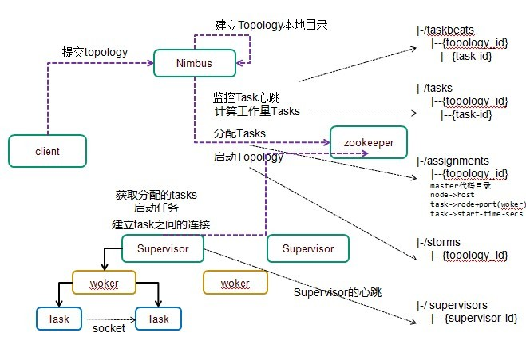

Storm简介
Storm是一个开源的分布式实时计算系统，可以简单、可靠的处理大量的数据流。
而且支持水平扩展，具有高容错性，保证每个消息都会得到处理。
Storm处理速度很快（在一个小集群中，每个结点每秒可以处理数以百万计的消息）。
Storm的部署和运维都很便捷，更为重要的是可以使用任意编程语言来开发应用。
目前国内一般采用阿里巴巴开源的JStorm版本；
参考教程
getting-started-with-stom-index
Storm典型应用案例？
- 数据处理流；不像其它的流处理系统，Storm不需要中间队列。
- 连续计算：连续发送数据到客户端，使它们能够实时更新并显示结果，如网站指标。
- 分布式远程过程调用：频繁的CPU密集型操作并行化。
Storm组件
在Storm集群中，有两类节点：主节点master node和工作节点worker nodes。主节点运行着一个叫做Nimbus的守护进程。这个守护进程负责在集群中分发代码，为工作节点分配任务，并监控故障。Supervisor守护进程作为拓扑的一部分运行在工作节点上。一个Storm拓扑结构在不同的机器上运行着众多的工作节点。
因为Storm在Zookeeper或本地磁盘上维持所有的集群状态，守护进程可以是无状态的而且失效或重启时不会影响整个系统的健康；
- NimBus: 责资源分配和任务调度
- Supervisor:负责接受nimbus分配的任务，启动和停止属于自己管理的worker进程
- Work:运行具体处理组件逻辑的进程
- Task: worker中每一个spout/bolt的线程称为一个task
0mq
在系统底层，Storm使用了zeromq(0mq)。这是一种先进的，可嵌入的网络通讯库，它提供的绝妙功能使Storm成为可能。
zeromq的特性：
- 一个并发架构的Socket库
- 对于集群产品和超级计算，比TCP要快
- 可通过inproc（进程内）, IPC（进程间）, TCP和multicast(多播协议)通信
- 异步I / O的可扩展的多核消息传递应用程序
- 利用扇出(fanout), 发布订阅（PUB-SUB）,管道（pipeline）, 请求应答（REQ-REP），等方式实现N-N连接

- 客户端提交拓扑到nimbus。
- Nimbus针对该拓扑建立本地的目录根据topology的配置计算task，分配task，在zookeeper上建立assignments节点存储task和supervisor机器节点中woker的对应关系；
- 在zookeeper上创建taskbeats节点来监控task的心跳；启动topology。
- Supervisor去zookeeper上获取分配的tasks，启动多个woker进行，每个woker生成task，一个task一个线程；根据topology信息初始化建立task之间的连接;Task和Task之间是通过zeroMQ管理的；后整个拓扑运行起来。
Storm特点
storm特性
使用场景：如实时分析，在线机器学习，持续计算，分布式RPC，ETL等等。
Storm有如下特点：
编程模型简单
在大数据处理方面相信大家对hadoop已经耳熟能详，基于Google Map/Reduce来实现的Hadoop为开发者提供了map、reduce原语，使并行批处理程序变得非常地简单和优美。
同样，Storm也为大数据的实时计算提供了一些简单优美的原语，这大大降低了开发并行实时处理的任务的复杂性，帮助你快速、高效的开发应用。
##可扩展
在Storm集群中真正运行topology的主要有三个实体：工作进程、线程和任务。
Storm集群中的每台机器上都可以运行多个工作进程，每个工作进程又可创建多个线程，每个线程可以执行多个任务，任务是真正进行数据处理的实体，我们开发的spout、bolt就是作为一个或者多个任务的方式执行的。
因此，计算任务在多个线程、进程和服务器之间并行进行，支持灵活的水平扩展。
高可靠性
Storm可以保证spout发出的每条消息都能被“完全处理”，这也是直接区别于其他实时系统的地方，如S4。
请注意，spout发出的消息后续可能会触发产生成千上万条消息，可以形象的理解为一棵消息树，其中spout发出的消息为树根，Storm会跟踪这棵消息树的处理情况，只有当这棵消息树中的所有消息都被处理了，Storm才会认为spout发出的这个消息已经被“完全处理”。如果这棵消息树中的任何一个消息处理失败了，或者整棵消息树在限定的时间内没有“完全处理”，那么spout发出的消息就会重发。
考虑到尽可能减少对内存的消耗，Storm并不会跟踪消息树中的每个消息，而是采用了一些特殊的策略，它把消息树当作一个整体来跟踪，对消息树中所有消息的唯一id进行异或计算，通过是否为零来判定spout发出的消息是否被“完全处理”，这极大的节约了内存和简化了判定逻辑，后面会对这种机制进行详细介绍。
这种模式，每发送一个消息，都会同步发送一个ack/fail，对于网络的带宽会有一定的消耗，如果对于可靠性要求不高，可通过使用不同的emit接口关闭该模式。
上面所说的，Storm保证了每个消息至少被处理一次，但是对于有些计算场合，会严格要求每个消息只被处理一次，幸而Storm的0.7.0引入了事务性拓扑，解决了这个问题。
高容错性
如果在消息处理过程中出了一些异常，Storm会重新安排这个出问题的处理单元。Storm保证一个处理单元永远运行（除非你显式杀掉这个处理单元）。
当然，如果处理单元中存储了中间状态，那么当处理单元重新被Storm启动的时候，需要应用自己处理中间状态的恢复。
支持多种编程语言
除了用java实现spout和bolt，你还可以使用任何你熟悉的编程语言来完成这项工作，这一切得益于Storm所谓的多语言协议。多语言协议是Storm内部的一种特殊协议，允许spout或者bolt使用标准输入和标准输出来进行消息传递，传递的消息为单行文本或者是json编码的多行。
Storm支持多语言编程主要是通过ShellBolt, ShellSpout和ShellProcess这些类来实现的，这些类都实现了IBolt 和 ISpout接口，以及让shell通过java的ProcessBuilder类来执行脚本或者程序的协议。
可以看到，采用这种方式，每个tuple在处理的时候都需要进行json的编解码，因此在吞吐量上会有较大影响。
##支持本地模式
Storm有一种“本地模式”，也就是在进程中模拟一个Storm集群的所有功能，以本地模式运行topology跟在集群上运行topology类似，这对于我们开发和测试来说非常有用。
高效
用ZeroMQ作为底层消息队列, 保证消息能快速被处理。
Storm基本慨念
Storm集群和Hadoop集群表面上看很类似。但是Hadoop上运行的是MapReduce jobs，而在Storm上运行的是拓扑（topology），这两者之间是非常不一样的。Topology的定义是一个Thrift结构，并且Nimbus就是一个Thrift服务， 你可以提交由任何语言创建的topology。
Topologies
一个topology是spouts和bolts组成的图， 通过stream groupings将图中的spouts和bolts连接起来;
一个topology会一直运行直到你手动kill掉，Storm自动重新分配执行失败的任务， 并且Storm可以保证你不会有数据丢失（如果开启了高可靠性的话）。如果一些机器意外停机它上面的所有任务会被转移到其他机器上。
运行一个topology很简单。首先，把你所有的代码以及所依赖的jar打进一个jar包。然后运行类似下面的这个命令：
storm jar all-my-code.jar backtype.storm.MyTopology arg1 arg2
这个命令会运行主类: backtype.strom.MyTopology, 参数是arg1, arg2。这个类的main函数定义这个topology并且把它提交给Nimbus。storm jar负责连接到Nimbus并且上传jar包。
Topology的定义是一个Thrift结构，并且Nimbus就是一个Thrift服务， 你可以提交由任何语言创建的topology。上面的方面是用JVM-based语言提交的最简单的方法。
Streams
消息流stream是storm里的关键抽象。一个消息流是一个没有边界的tuple序列， 而这些tuple序列会以一种分布式的方式并行地创建和处理。通过对stream中tuple序列中每个字段命名来定义stream。在默认的情况下，tuple的字段类型可以是：integer，long，short， byte，string，double，float，boolean和byte array。你也可以自定义类型（只要实现相应的序列化器）。
每个消息流在定义的时候会被分配给一个id，因为单向消息流使用的相当普遍， OutputFieldsDeclarer定义了一些方法让你可以定义一个stream而不用指定这个id。在这种情况下这个stream会分配个值为‘default’默认的id 。
Storm提供的最基本的处理stream的原语是spout和bolt。你可以实现spout和bolt提供的接口来处理你的业务逻辑。
Nimbus
nimbus 雨云，主节点的守护进程，负责为工作节点分发任务。
Spouts（消息源）
spout 龙卷，读取原始数据为bolt提供数据；
消息源spout是Storm里面一个topology里面的消息生产者。一般来说消息源会从一个外部源读取数据（如MQ）并且向topology里面发出消息：tuple。Spout可以是可靠的也可以是不可靠的。如果这个tuple没有被storm成功处理，可靠的消息源spouts可以重新发射一个tuple， 但是不可靠的消息源spouts一旦发出一个tuple就不能重发了。
消息源可以发射多条消息流stream。使用OutputFieldsDeclarer.declareStream来定义多个stream，然后使用SpoutOutputCollector来发射指定的stream。
Spout类里面最重要的方法是nextTuple。要么发射一个新的tuple到topology里面或者简单的返回如果已经没有新的tuple。要注意的是nextTuple方法不能阻塞，因为storm在同一个线程上面调用所有消息源spout的方法。
另外两个比较重要的spout方法是ack和fail。storm在检测到一个tuple被整个topology成功处理的时候调用ack，否则调用fail。storm只对可靠的spout调用ack和fail。
消息流中的Tuple
Tuple是一次消息传递的基本单元，tuple里的每个字段一个名字,并且不同tuple的对应字段的类型必须一样。
tuple的字段类型可以是： integer, long, short, byte, string, double, float, boolean和byte array；
还可以自定义类型 — 只要实现对应的序列化器。
每个消息流中包括若干个tuple。
Bolts（消息处理者）
bolt 雷电，从spout或其它bolt接收数据，并处理数据，处理结果可作为其它bolt的数据源或最终结果；
所有的消息处理逻辑被封装在bolts里面。Bolts可以做很多事情：过滤，聚合，查询数据库等等。
Bolts可以简单的做消息流的传递。复杂的消息流处理往往需要很多步骤，从而也就需要经过很多bolts。比如算出一堆图片里面被转发最多的图片就至少需要两步：第一步算出每个图片的转发数量。第二步找出转发最多的前10个图片。（如果要把这个过程做得更具有扩展性那么可能需要更多的步骤）。
Bolts可以发射多条消息流， 使用OutputFieldsDeclarer.declareStream定义stream，使用OutputCollector.emit来选择要发射的stream。
Bolts的主要方法是execute, 它以一个tuple作为输入，bolts使用OutputCollector来发射tuple，bolts必须要为它处理的每一个tuple调用OutputCollector的ack方法，以通知Storm这个tuple被处理完成了，从而通知这个tuple的发射者spouts。 一般的流程是： bolts处理一个输入tuple, 发射0个或者多个tuple, 然后调用ack通知storm自己已经处理过这个tuple了。storm提供了一个IBasicBolt会自动调用ack。
Stream groupings（消息分发策略）
定义一个topology的其中一步是定义每个bolt接收什么样的流作为输入。stream grouping就是用来定义一个stream应该如何分配数据给bolts上面的多个tasks。
Storm里面有7种类型的stream grouping
1. Shuffle Grouping: 随机分组， 随机派发stream里面的tuple，保证每个bolt接收到的tuple数目大致相同。
2. Fields Grouping：按字段分组， 比如按userid来分组， 具有同样userid的tuple会被分到相同的Bolts里的一个task， 而不同的userid则会被分配到不同的bolts里的task。
3. All Grouping：广播发送，对于每一个tuple，所有的bolts都会收到。
4. Global Grouping：全局分组， 这个tuple被分配到storm中的一个bolt的其中一个task。再具体一点就是分配给id值最低的那个task。
5. Non Grouping：不分组，这个分组的意思是说stream不关心到底谁会收到它的tuple。目前这种分组和Shuffle grouping是一样的效果， 有一点不同的是storm会把这个bolt放到这个bolt的订阅者同一个线程里面去执行。
6. Direct Grouping： 直接分组， 这是一种比较特别的分组方法，用这种分组意味着消息的发送者指定由消息接收者的哪个task处理这个消息。 只有被声明为Direct Stream的消息流可以声明这种分组方法。而且这种消息tuple必须使用emitDirect方法来发射。消息处理者可以通过TopologyContext来获取处理它的消息的task的id （OutputCollector.emit方法也会返回task的id）。
7. Local or shuffle grouping：如果目标bolt有一个或者多个task在同一个工作进程中，tuple将会被随机发生给这些tasks。否则，和普通的Shuffle Grouping行为一致。
Reliability
Storm保证每个tuple会被topology完整的执行。Storm会追踪由每个spout tuple所产生的tuple树（一个bolt处理一个tuple之后可能会发射别的tuple从而形成树状结构），并且跟踪这棵tuple树什么时候成功处理完。每个topology都有一个消息超时的设置，如果storm在这个超时的时间内检测不到某个tuple树到底有没有执行成功， 那么topology会把这个tuple标记为执行失败，并且过一会儿重新发射这个tuple。
为了利用Storm的可靠性特性，在你发出一个新的tuple以及你完成处理一个tuple的时候你必须要通知storm。这一切是由OutputCollector来完成的。通过emit方法来通知一个新的tuple产生了，通过ack方法通知一个tuple处理完成了。
Tasks
每一个spout和bolt会被当作很多task在整个集群里执行。
每一个executor对应到一个线程，在这个线程上运行多个task，而stream grouping则是定义怎么从一堆task发射tuple到另外一堆task。
你可以调用TopologyBuilder类的setSpout和setBolt来设置并行度（也就是有多少个task）。
Workers
一个topology可能会在一个或者多个worker（工作进程）里面执行，每个worker是一个物理JVM并且执行整个topology的一部分。
比如，对于并行度是300的topology来说，如果我们使用50个工作进程来执行，那么每个工作进程会处理其中的6个tasks。
Storm会尽量均匀的工作分配给所有的worker。
Configuration
Storm里面有一堆参数可以配置来调整Nimbus, Supervisor以及正在运行的topology的行为，一些配置是系统级别的，一些配置是topology级别的。
default.yaml里面有所有的默认配置。你可以通过定义个storm.yaml在你的classpath里来覆盖这些默认配置。并且你也可以在代码里面设置一些topology相关的配置信息（使用StormSubmitter）。